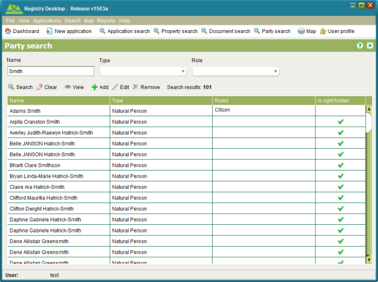

The Party Search screen allows you to locate parties which include both people (Natural
Person) and organizations/groups (Non-natural Person) that are associated to property or
property transactions. You can also add, edit, remove or view party details from this screen.
It can be accessed by selecting  Party or
Search > Party menu.
Party or
Search > Party menu.

Party Search
You can search by any combination of Name, Type and Role. The Name also supports partial and full matching. SOLA State Land makes no attempt to automatically link or de-duplicate new party records. This can result in an individual or organization/group being listed multiple times in the search results.
The Is right holder flag indicates whether the party has a direct association to a property as an owner or as a named party for another property right. Parties that are flagged as right holders cannot be edited or removed using this screen. Instead changes to the right holder details can only be made using one of the property or interest tasks.
Using this screen you can add a new party by clicking Add or edit existing parties that are not flagged as
right holders by selecting a search result and clicking
Add or edit existing parties that are not flagged as
right holders by selecting a search result and clicking Edit. Both actions will open the Persons Details
screen allowing you to enter details for an individual or an entity. It is also possible to
add new parties as well as edit parties using other functions in SOLA State Land such as
property owners and right holders.
Edit. Both actions will open the Persons Details
screen allowing you to enter details for an individual or an entity. It is also possible to
add new parties as well as edit parties using other functions in SOLA State Land such as
property owners and right holders.
To remove an existing party, select it and click Remove. If the party is not linked as an agent, property
owner or right holder, the record will be removed.
Remove. If the party is not linked as an agent, property
owner or right holder, the record will be removed.
If you simply need to view the party details, select it and click  Open.
Open.